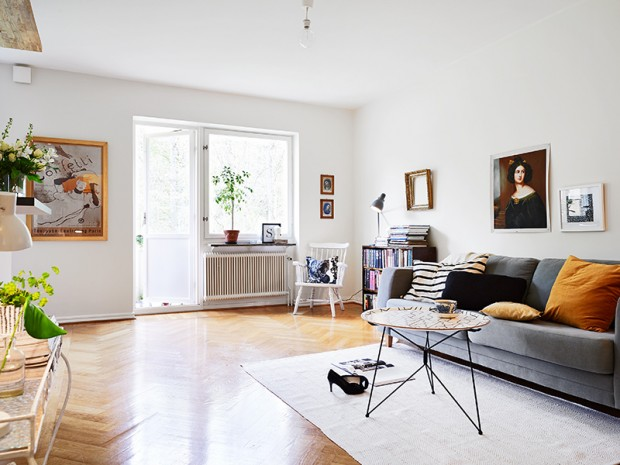
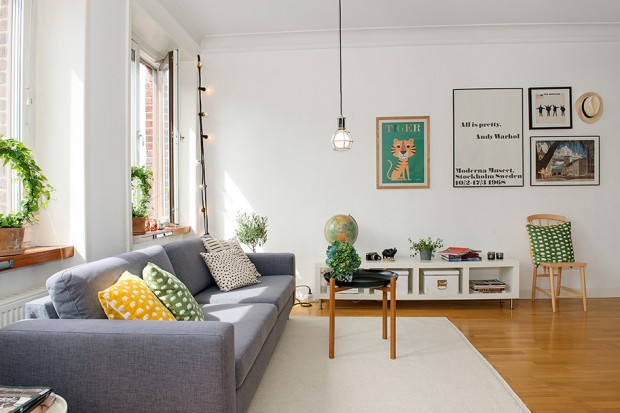
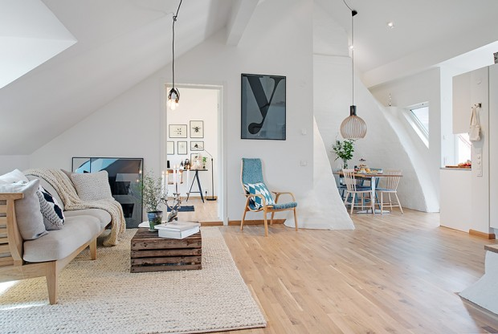

案例展示#1
-

200平米北欧风格设计
北欧风是时下年轻人最喜欢的装修风格，简单、宁静、柔和、自然。住在这样的房子里，才发现原来美好的生活其实就是这么简单。经过设计师的精心设计，北欧风的设计装修也能增添实用性，以及观赏性。下面就随小编一起来看看本套柏悦公馆127平米北欧风格装修效果吧 -

200平米北欧风格设计
北欧风是时下年轻人最喜欢的装修风格，简单、宁静、柔和、自然。住在这样的房子里，才发现原来美好的生活其实就是这么简单。经过设计师的精心设计，北欧风的设计装修也能增添实用性，以及观赏性。下面就随小编一起来看看本套柏悦公馆127平米北欧风格装修效果吧 -

200平米北欧风格设计
北欧风是时下年轻人最喜欢的装修风格，简单、宁静、柔和、自然。住在这样的房子里，才发现原来美好的生活其实就是这么简单。经过设计师的精心设计，北欧风的设计装修也能增添实用性，以及观赏性。下面就随小编一起来看看本套柏悦公馆127平米北欧风格装修效果吧